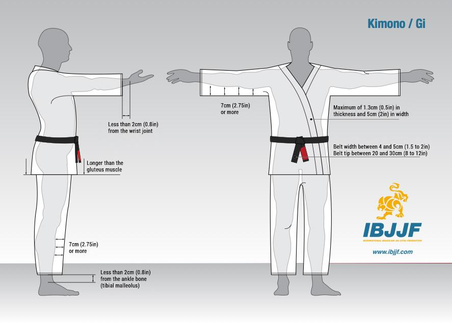
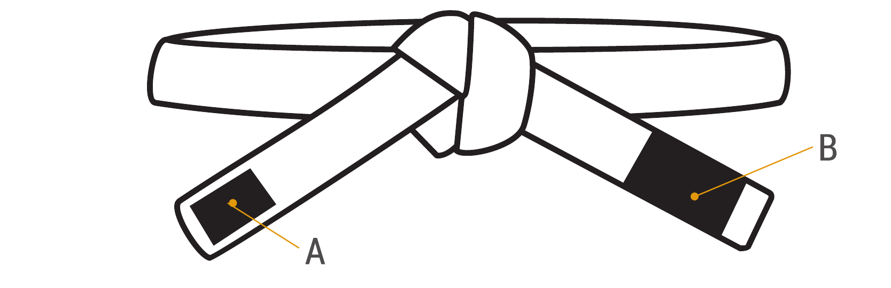
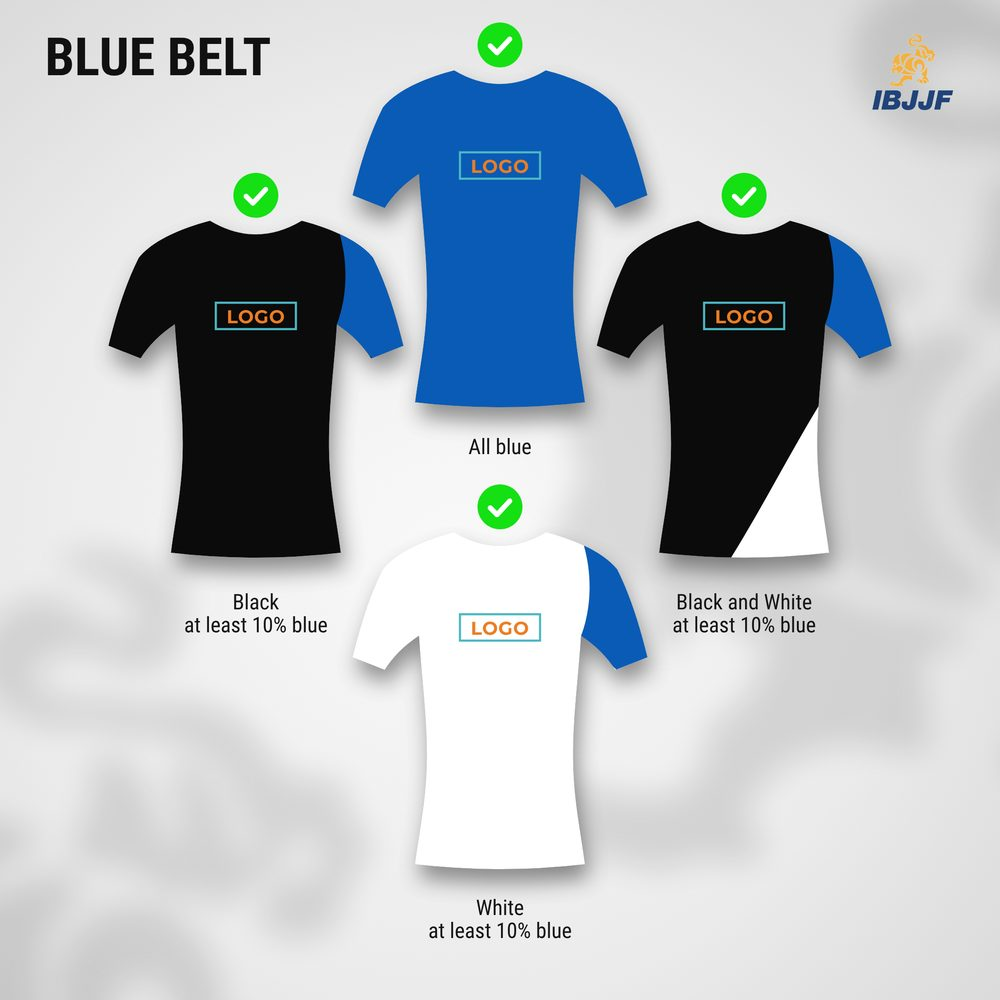
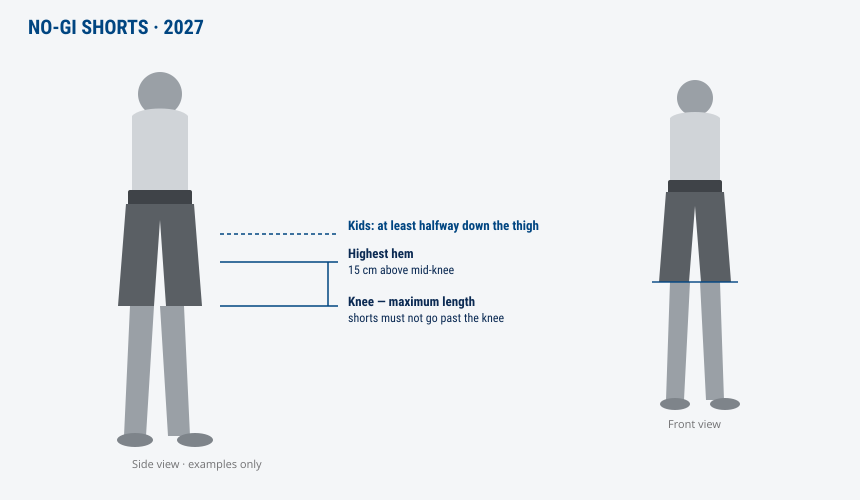
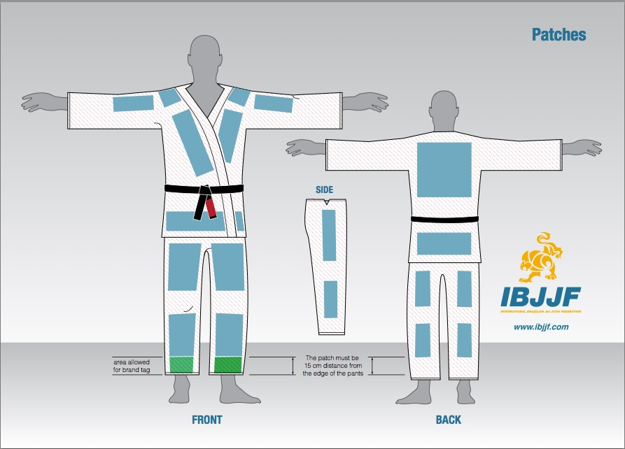
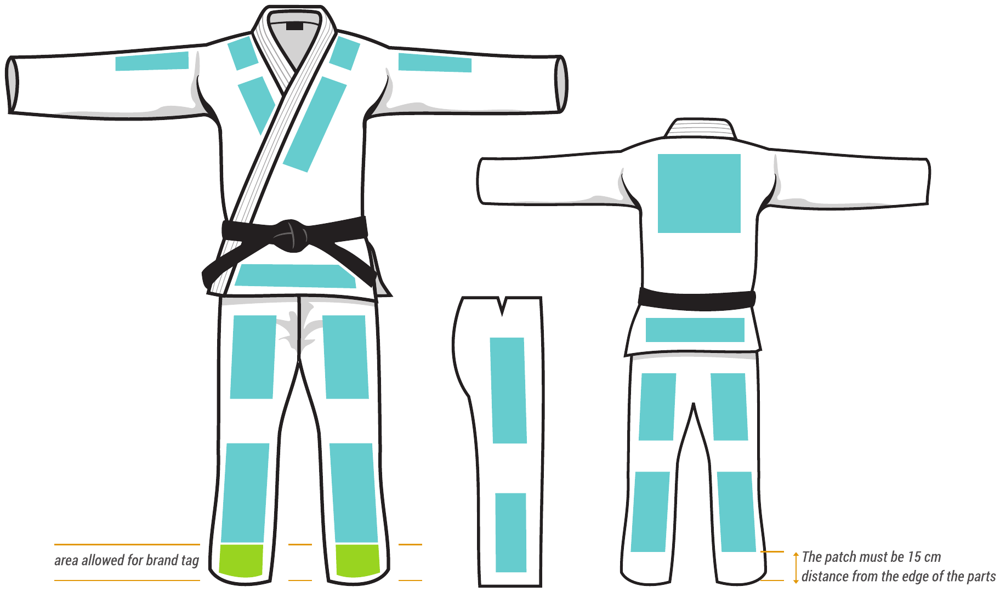

International Brazilian Jiu-Jitsu FederationUniform
Effective 1 January 2027
Interactive prototype of the IBJJF Uniform page, updated for the rules effective 1 January 2027. This is not the live site.
IBJJF Uniform Requirements
Requirements for Gi and No-Gi uniforms at IBJJF competitions, including official measurements, colors, patches, and the manufacturer color standard. The 2027 No-Gi updates below replace the previous rash-guard color rule and shorts-length wording in article 8.1.16.
GI Material
GIs should be tailored using cotton or cotton-like fabric only. The fabric should not be so thick or hard as to impede an opponent from gripping it. A GI fashioned from woven fabric is mandatory for all age divisions. It is permitted to wear kimono with EVA or similar material inside the collar, if the measures of size and rigidity regulations provided in the IBJJF Rules Book are followed.
GI Color
GIs must be of uniform color. The following colors are permissible: white, royal blue or black. Gis with tops and pants of different colors are not permitted; nor are GIs with a collar that is a different color than the rest of the top. Painted GIs are forbidden, unless the paint is designed in the form of an academy or sponsor logo – and only on regions of the GI where patches are permitted. Even in cases where they are permitted, the athlete will be obliged to change GIs should the paint mark the GI of the opponent.
Official color codes (including Royal Blue 19-3955 TCX) are in Belts & Colors and the Uniform Manual for Manufacturers. Navy blue is not allowed.
GI Measurements
The GI top should reach the athlete’s thigh and the sleeves should come to no more than 2 cm from the athlete’s wrist when the arm is extended straight parallel to the ground. GI pants should reach no more than 2 cm above the tibial malleolus (ankle bone).
The inspection will verify whether the following official measurements are met: GI lapel thickness (1.3 cm), width of GI collar (5 cm), opening of sleeve at full extension (7 cm).
Color explorer
White
Permissible GI colors: white, royal blue or black. Swatches are approximate.
Measurement explorer
Select a numbered point on the official figure, or click the image to zoom.

Select a point
Use the numbered markers to read the official measurement for that part of the GI.
Belt requirements
Athletes should use a durable, 4 to 5 cm wide belt colored according to the athlete’s rank, with a black tip – except for black belts, where the tip should be white or red. The belt should be worn over the top, wrap around the waist twice, and be tied using a double knot tight enough to hold the GI top closed. Once tied in a double knot, each end of the belt should hang 20 to 30 cm in length.

A — manufacturer label only at the tip of the belt. B — black tip (white or red tip for black belts). From the Uniform Manual for Manufacturers. Click to zoom.
Other Requirements
Use of a shirt under the GI top is prohibited, except for women. In the female divisions, it is mandatory for the use of a stretchy or elastic shirt that hugs the body beneath the GI; it can be short or long sleeved, without the necessity to follow the color requirements. It is also permitted for athlete’s to use a one piece swim garment (bathing suit) or gymnastics top.
Wearing pants of any kind under GI pants is prohibited, except for women, who are permitted to use pants made of elastic fabric (clings to body) under the GI pants, as long as these pants are shorter than the GI pants.
Athletes must use undergarments. The use of thong-type undergarments is not permitted; only briefs-type undergarments.
GIs may not exhibit mending or tears, be wet or dirty or emanate unpleasant odors.
2027 Shirts and Rash Guards
Both genders must wear a shirt of elastic material (skin tight) long enough to cover the torso all the way to the waistband of the shorts, colored black, white, or black and white, and, for colored belts (grey, yellow, orange, green, blue, purple and brown), with at least 10% of the rank color (belt) to which the athlete belongs. The rank color must be placed so that the athlete’s rank (belt) can be clearly identified whether the athlete is seen from the front or from the back. Shirts 100% the color of the athlete’s rank (belt) are also permitted.
White belts: predominantly white (more than 50% of the surface); the only secondary color allowed is black.
Black belts: predominantly black (more than 50% of the surface); the only secondary color allowed is white.
Note: For black belts a small red area will be tolerated, but must not de-characterize the athlete’s rank color.
Art. 8.1.16, effective 1 January 2027.
Select a belt
Choose a rank to see the allowed No-Gi rash guard colors and the official rule for that belt.

Example photos. Click to zoom. Official color codes are in Belts & Colors.
Blue belt — No-Gi rash guard
2027 Shorts — length (men and women)
Shorts (men and women): must not be longer than the knee, and the bottom of the shorts must be no more than 15 cm above the middle of the knee. For kids divisions, the shorts must cover at least halfway down the thigh.
Art. 8.1.16, effective 1 January 2027. This replaces the previous wording (“at least halfway down the thigh” / “no more than 15 cm from the knee”) for adult and master divisions. The halfway-down-the-thigh minimum now applies to kids divisions.

Updated 2027 measurement figure. Click to zoom. The previous public figure that read “no more than 15 cm from the knee” is no longer current and is not used here.
Shorts for men
Board shorts colored black, white, black and white, and/or the color of the rank (belt) to which the athlete belongs, without pockets or with the pockets stitched completely shut, without buttons, exposed drawstrings, zippers or any form of plastic or metal that could present a risk to the opponent.
Length: must not be longer than the knee, and the bottom of the shorts must be no more than 15 cm above the middle of the knee. For kids divisions, the shorts must cover at least halfway down the thigh.
2027 Also permitted are compression pants (skin-tight spats) and/or compression shorts made of elastic material (skin tight), worn beneath the shorts, in the colors black, white, black and white, and/or the color of the rank (belt) to which the athlete belongs.
Shorts, compression shorts and pants for women
Shorts, compression pants (skin-tight spats) and/or compression shorts colored black, white, black and white, and/or the color of the rank (belt) to which the athlete belongs. The shorts must not have pockets or have the pockets stitched completely shut, must not have buttons, zippers or any kind of plastic or metal that could present a risk to the opponent.
Length: must not be longer than the knee, and the bottom of the shorts must be no more than 15 cm above the middle of the knee. For kids divisions, the shorts must cover at least halfway down the thigh.
Fabric (Uniform Manual for Manufacturers)
Rash guards and shorts are polyester and spandex.
This fabric specification is from the Uniform Manual for Manufacturers. Manufacturers must match the official Pantone TCX color standard on polyester (see Belts & Colors and the Manufacturers tab).
Official colors — Pantone TCX
Official color references are Pantone Fashion, Home + Interiors Cotton (TCX), as published in the Uniform Manual for Manufacturers. On-screen swatches are approximate; the physical TCX standard is the reference.
Rash guards and shorts are polyester and spandex. Manufacturers must match the official Pantone TCX colour standard (Fashion, Home + Interiors, Cotton) on polyester, by lab dip / approval against the physical TCX standard. Navy Blue is not allowed. White remains PMS White (no official TCX colour is named simply “White”).
White
PMS White
Royal Blue
19-3955 TCX
Navy Blue
Not allowed
Black Onyx
19-4003 TCX
Silent Storm (Grey)
17-1508 TCX
Spectra Yellow
14-0957 TCX
Puffin’s Bill (Orange)
16-1363 TCX
Kelly Green
16-6138 TCX
Bright Violet
19-3438 TCX
Monk’s Robe (Brown)
18-1048 TCX
Same official TCX standard for Gi colors (white, royal blue, black) and for No-Gi rank colors, matched on polyester for rash guards and shorts.
2027 No-Gi rash guard — rules by belt
White belts: predominantly white (more than 50% of the surface); the only secondary color allowed is black.
Colored belts (grey, yellow, orange, green, blue, purple and brown): black, white, or black and white, with at least 10% of the rank color, placed so the rank can be clearly identified from the front or the back. Shirts 100% the belt color are also permitted.
Black belts: predominantly black (more than 50% of the surface); the only secondary color allowed is white. A small red area will be tolerated, but must not de-characterize the athlete’s rank color.
Use the belt selector on the No-Gi tab to see example photos for each rank.
Patches
Patches may only be affixed in authorized regions of the GI, as depicted in the IBJJF Rules Book. They should be of cotton fabric and properly seamed. All patches unseamed or in unauthorized regions of the GI will be removed by the GI inspectors.
Painted GIs are forbidden, unless the paint is designed in the form of an academy or sponsor logo – and only on regions of the GI where patches are permitted. Even in cases where they are permitted, the athlete will be obliged to change GIs should the paint mark the GI of the opponent.

Official athlete-facing figure from the current IBJJF Uniform page. Click to zoom.

Line art from the Uniform Manual for Manufacturers, including the brand-tag area and the 15 cm distance from the edge of the pants. Click to zoom.
Uniform Manual for Manufacturers
The manual sets construction details, labeling, patch areas, and the official color standard for approved uniforms.
Rash guards and shorts are polyester and spandex. Manufacturers must match the official Pantone TCX colour standard (Fashion, Home + Interiors, Cotton) on polyester, by lab dip / approval against the physical TCX standard. Navy Blue is not allowed. Swatches are approximate; the physical TCX standard is the reference. White remains PMS White (no official TCX colour is named simply “White”).
Athlete-facing inspection measurements on the Gi tab follow the IBJJF Rules Book and the public Uniform page (lapel thickness 1.3 cm, collar width 5 cm, sleeve opening 7 cm). Construction diagrams below are from the manufacturer manual.